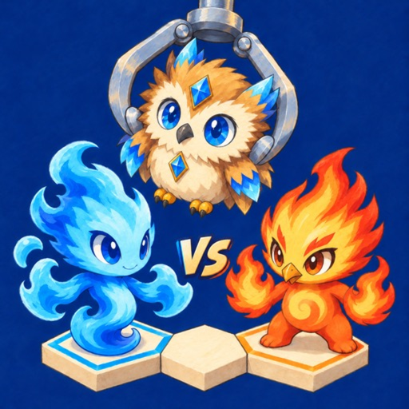
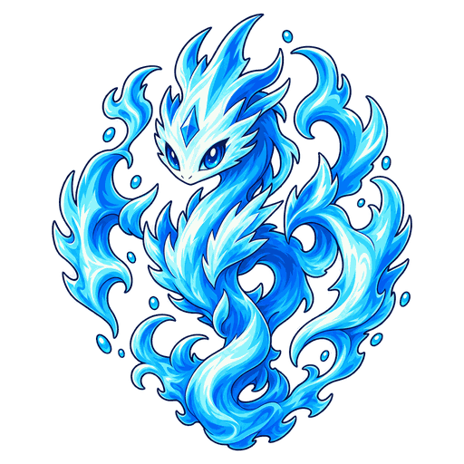

主動
波浪之路
對3格內的當前目標造成相當於魔力620%的魔法傷害。隨後連鎖至前一個目標周圍2格內尚未被命中的最近敵人，最多3次。每次連鎖造成前一次傷害50%的傷害。

MonChexx 維基
No.006
法師遠程 第1賽季
從當前目標開始，對附近的敵人連鎖造成逐次減弱的魔法傷害；受到攻擊時擊退周圍的敵人。
| 屬性 | Lv.1 | Lv.11 |
|---|---|---|
| 生命值 | 340 | 1375 |
| 攻擊力 | 20 | 81 |
| 魔力 | 20 | 81 |
| 防禦力 | 10 | 10 |
| 魔法抗性 | 10 | 10 |
| 攻擊間隔 | 0.67秒 | 0.67秒 |
| 射程 | 遠程 · 3格 | 遠程 · 3格 |
| 法力 | 0 / 60 | 0 / 60 |
每升一級，生命值、攻擊力和魔力提高15%（最高Lv.11）。
主動
對3格內的當前目標造成相當於魔力620%的魔法傷害。隨後連鎖至前一個目標周圍2格內尚未被命中的最近敵人，最多3次。每次連鎖造成前一次傷害50%的傷害。
被動
受到直接傷害時，將自身周圍1格內的所有敵人往遠離自身的方向擊退1格。冷卻時間為4秒。